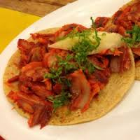
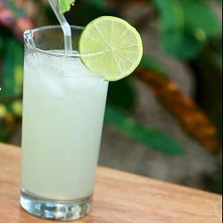
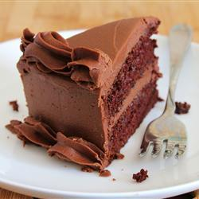

TaquitoMX
¿HAMBRE?
¡Siempre pensamos en ti y en tus antojos!
TACOS
TACOS
- PASTOR
- PASTOR C/QUESO
- DE BISTECK
- DE GUISADOS (sobre 2 tortillas con arroz o frijoles refritos)
ESPECIALIDADES

- Las cazuelas (Incluyen:tortillas de maiz, salsa y limones)
- DOÑA CAZUELA: arrachera, chorizo y pastor, acompañadas de cebollitas al carbón.
- LA CONSENTIDA: chuleta, alambre de pastor y chorizo acompañadas de cebollitas al carbón.
- La tradicional de pastor.
- MOLCAJETES:¡PARA DARSE GUSTO… O AL CENTRO! Para 2 personas con tiras de nopal, queso fresco y cebollitas cambray csadas, servidas con nuestra calsa TaquitoMX.
- ARRACHERA A LA PARRILLA: Con chorizo, Queso fresco y Guacamole.
- PLATÓN DE ANTOJO: 2 tacos de bistec, 2 tacos de chorizo y 1 cazuelita de queso fundido
BEBIDAS
- NARANJADA
- LIMONADA
- CERVEZAS
- MICHELADAS
POSTRES
- Flan napolitano
- Pastel de chocolate
- Helado: chocolate y vainilla